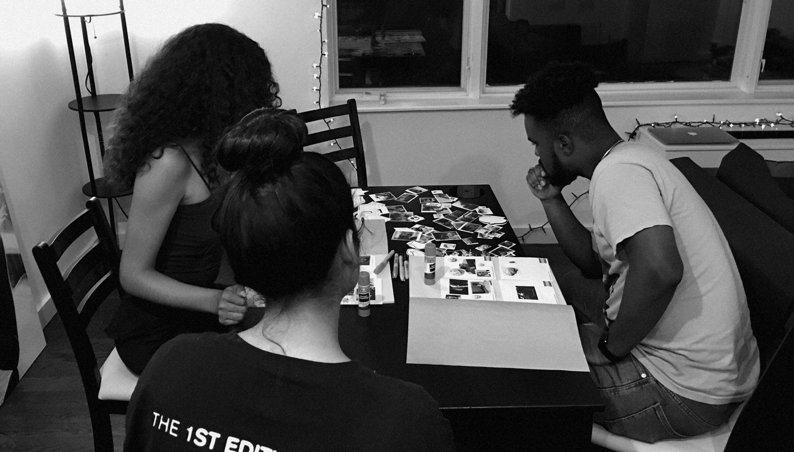
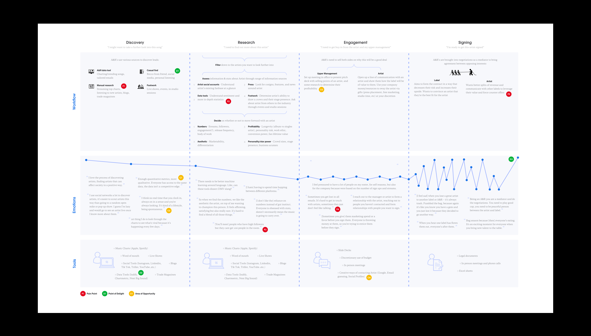
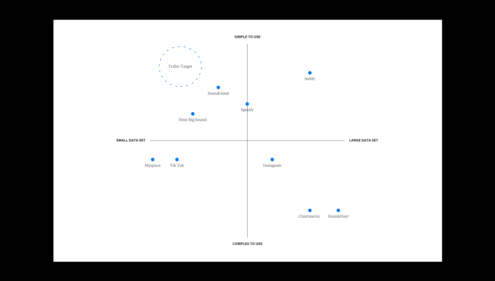
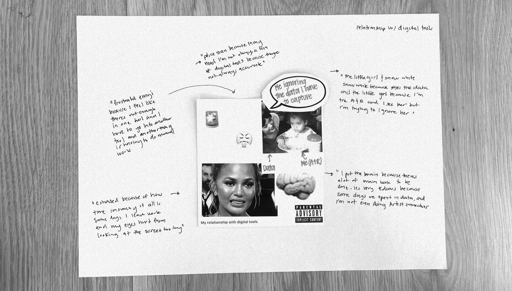

. . .
How did this research begin?
I initiated this project under the mentorship of Basim Al-Baker (UXR lead at Blinkist, previously Soundcloud) to tackle a new potential stream of revenue for Triller based on trends in the music industry.
The transforming role of an A&R
The role of an A&R (reps who scout talent for a label) is transforming in an age where music consumption happens at a rapid pace and a new star is born and replaced every couple weeks. A&R’s now use a new set of digital tools to find artists with bubbling online fan bases that a label sign and profit off of before they are snatched up by another label.
Is Triller positioned to productize their data?
Social video apps like Triller, TikTok, and even Instagram have become a breeding ground for songs and artists to show early trends of popularity before blowing up. I conducted this research to understand if and how Triller could create a product with their valuable data set to help A&R’s find new talent.

Writing about the impact of social video apps in the music industry
What did we learn?
#1 — A&R’s want a tool that empowers their gut feeling
The current landscape of tools are time-consuming, hard to understand and frankly, in an age where artists are buying fake views/fans, A&Rs don’t fully trust them. Not only that, but since everyone has the same data, the data no longer becomes a differentiator between labels who are often pitted against each other in bidding wars. A&R’s are continuously relying on their gut to make decisions and the current landscape of tools isn’t able to (or focused on) informing that gut decision from a qualitative perspective. Sentiment analysis on these tools are unable to understand slang when determining what people are saying about an artist. We have an opportunity to tackle this unmet need.
#2 — A&R’s want a tool that adapts to their always-on work schedule
A&Rs expressed that the search for new artists never really turns off, spending many nights going to shows to see potential talent live. In our sessions, they expressed wanting an easy-to-use mobile-first tool that would help them scope out more artists per day. Being that the hunt for new artists is a fun activity to A&Rs (and often what drew them to the field) we have the opportunity to create an engaging tool that can be used in moments throughout their day like when they’re in line for a show or before they go to bed. With well-timed notifications we can build usage habits throughout the day.
#3 — A&R’s see unique value in Triller to find cross-over acts
A&Rs saw potential in Triller’s ability to help them understand the “cultural value” of a song/artist through seeing its reception on the platform. They also liked the ability to find crossover acts that may have gained a following through the comedy, fashion, or dance categories on the app. A&Rs see smaller apps like Triller as a valuable source to find unsigned talent early, in contrast to bigger platforms like Spotify or Apple Music.
While this unique angle of our app provides value, A&Rs also expressed that features such as benchmarking which are present in competitor apps are table-stake features as A&Rs need a way to justify if an artist is a worthwhile investment compared to other unsigned act.
#4 — A&Rs want to decrease friction in connecting with artists
Getting in contact with artists during engagement process is a huge pain point for A&Rs. This came up in our codesign where they suggested solutions to better inform them of the accuracy of listed out points of contact or even giving them an elevated account on Triller that allowed them to message talent directly on the app. This second suggestion is something Triller is uniquely positioned to do since artist have verified accounts on our app and is in line with the goal of our consumer app to get more artists on to the platform.
How did I approach the research?
Breaking down the problem
I tried to assess the knowledge gaps from the perspective of the Triller team, making assumptions about what research was most likely to already exist (ie. artist-centered research). I broke this down into 4 research questions:
✣
What is the A&R workflow for signing new talent?
✣
What is the current landscape of A&R tools?
✣
What is A&R impression of Triller as an artist discover tool?
✣
What are A&R pain points and areas of opportunity?
Working within constraints
Zero budget meant I had to be scrappy with recruitment and choosing research methods. To recruit I used cold emails and referrals from participants. I had to be strategic about my limited time and pull with A&Rs, so I wasn’t free to use the most ideal methods. For example, a diary study could have given more insight into the temporal process of signing new artists. I also wasn’t able to buy subscriptions to other products for the competitive analysis and so I read through their product pitch decks and got access to a couple from an A&R I built rapport with.
The music industry is notorious for its “relaxed” sense of professionalism and so it was important to be adaptable. During the 1-1 interviews I asked clarifying questions when A&Rs used heavy slang to make sure I was not adding my own bias. Another example was the codesign, where it was held at a participants house to accomodate for schedules and it ended up getting interrupted mid-session by a weed delivery. In moments like these it is important to respect the norms of your participants and keep things moving.

Running the codesign at a participant's apartment
Communicating deliverables from a strategic POV
During the early stages of product development it’s important to look at the problem from a holistic perspective and figure out a strategic positioning for your product as opposed to getting caught up in features right away. This thinking informed how I approached the deliverables for this project.
I created a journey map to highlight the entire signing process, calling out points of pain, delight and areas of opportunity. I used the Jobs To Be Done framework in my interviews and probed into each separate phase of their process.

Journey map digging into the full artist discovery → signing process
I structured the competitive analysis around the data sets they were pulling from, and their overall strengths and weaknesses. I then contextualized them in a brand matrix with a focus on finding a gap in the market

Brand matrix from the competitive analysis
With the codesign, I used generative methods that allowed for rich artefacts which I annotated so that they could be posted around an office to provoke thinking and promote an open research-based culture.

Annotated poster of one of the collages from the codesign